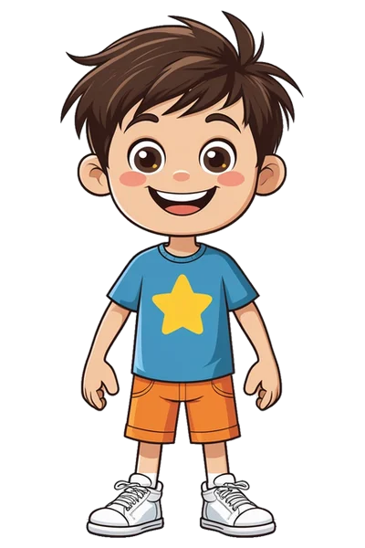
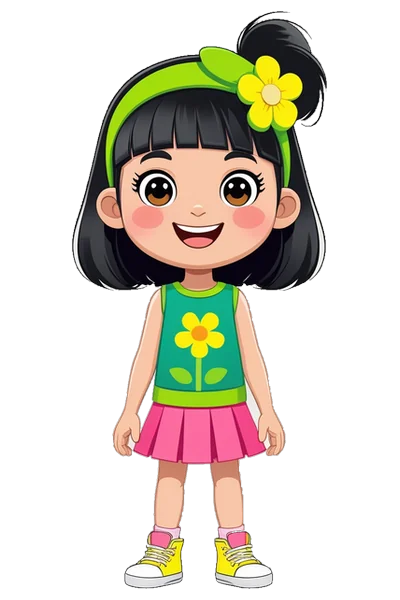

A mostani mozgó robot megmarad. Mellé jön a képes robot, a fiú és a lány. Ez még csak minta, a valódi oldalhoz nem nyúltam.

Fiúmár választható
Lánymár választhatóA mozgó robotot itt nem tudom lerajzolni, az az oldalon animáció. A három kép a valódi, már elkészített figura.